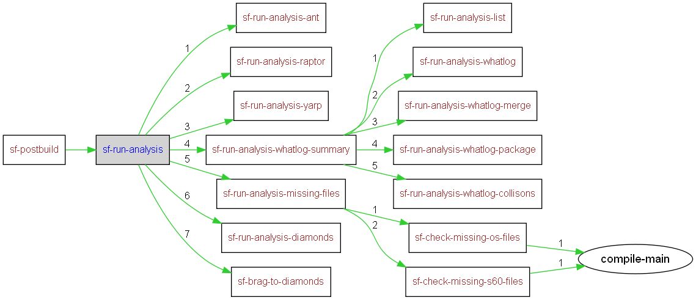

|
Helium API | ||||||
| prev next | frames no frames | ||||||
Location
D:\maintools\sf-config\common\build.postbuild.xml:270:
Conditional execution
No conditions on target execution.
runs analysis of missing bins and source
| Name | Edit status |
|---|---|
| User editable properties | |
| Internal properties | |
| build.log.dir | discouraged |

<target name="sf-run-analysis">
<mkdir dir="${build.log.dir}/analysis"/>
<parallel>
<runtarget target="sf-run-analysis-ant"/>
<runtarget target="sf-run-analysis-raptor"/>
<runtarget target="sf-run-analysis-yarp"/>
<runtarget target="sf-run-analysis-whatlog-summary"/>
</parallel>
<if>
<istrue value="${sf.spec.publish.enable}"/>
<then>
<runtarget target="sf-run-analysis-diamonds"/>
</then>
</if>
</target>
|
Helium API | ||||||
| prev next | frames no frames | ||||||